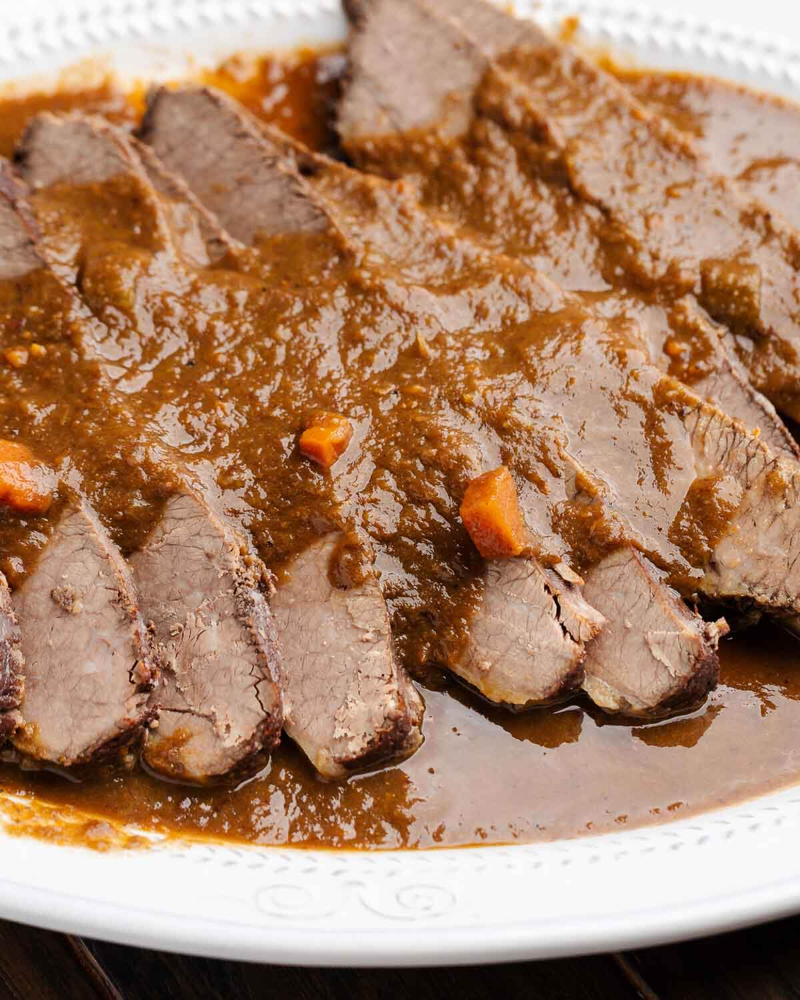

Brasato al Barolo (Braised Veal in Barolo Wine)

Description
Beef braised in Barolo is a classic Italian dish from Piedmont, a super traditional, easy-to-do recipe, where a simple piece of meat becomes pure poetry.
First of all, what cut is best for beef stew? There are many cuts to choose from: you can go with the rump, the cheeks, even if the best part of all is the shoulder muscle, where the meat is rich not only in thin veins of fat but also in connective tissue. And you know what happens when you have plenty of collagen and time: the meat will become tender like a dream.
But don’t rush it, take it easy and start with a good glass of wine, because the most important step is marinating the meat, so if you want to prepare a good beef stew in Barolo, take some time for yourself and the recipe and, even better you manage to plan it with a few days in advance.
Ingredients
- 1 kg (21/4lb) boneless veal shoulder roast
- 25g (scant 2 tablespoons) butter
- 25g (scant 2 tablespoons) lardo Piedmontese or Valdostano
- 1 large onion
- 1 garlic clove
- 1 carrot, diced
- 1 celery stalk
- sprig of rosemary
- 1 bay leaf
- 10 cloves
- a piece of stick cinnamon
- salt
- pepper
- 1 bottle Barolo wine
- 1 litre (1 quart) beef broth, or enough to cover the meat in the casserole
- 60ml (1/4 cup) rum
Steps
- Mash the butter and lardotogether and blend well.
- Put the mixture in the casserole along with the meat, adding the garlic, onion, carrot, celery,rosemary, bay leaf, cloves, cinnamon, and salt and pepper to taste.
- Cook on medium-high heat until the meat is well-browned.
- Add the wine and lower the heat.
- When the wine is almost completely reduced add 120ml (1/2 cup) cold water.
- Repeat the same amount of cold water three more times, each time waiting until it has cooked down almost completely before adding the next.
- Add enough hot broth to cover the meat and cook with the lid on for an hour at moderate heat.
- Remove the meat and sieve the juices.
- Return both to the casserole and continue cooking until the liquid reaches the desired consistency.
- Add the rum and cook another 15 minutes.
- Remove the meat to a platter, slice thinly and serve with the sauce.
Translator’s note: It is important to use a casserole in which the meat is covered completely by the wine and broth during cooking. The sauce was traditionally puréed through a sieve; in the name of expediency a hand-held mixer can be used.
Description by winedharma.com
Beppe Lodi; Luciano De Giacomi, Nonna Genia. Boves: Araba Fenice Edizioni, 2007, p.60
Home